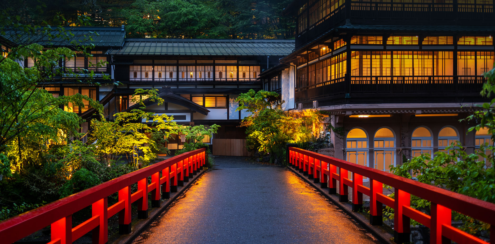
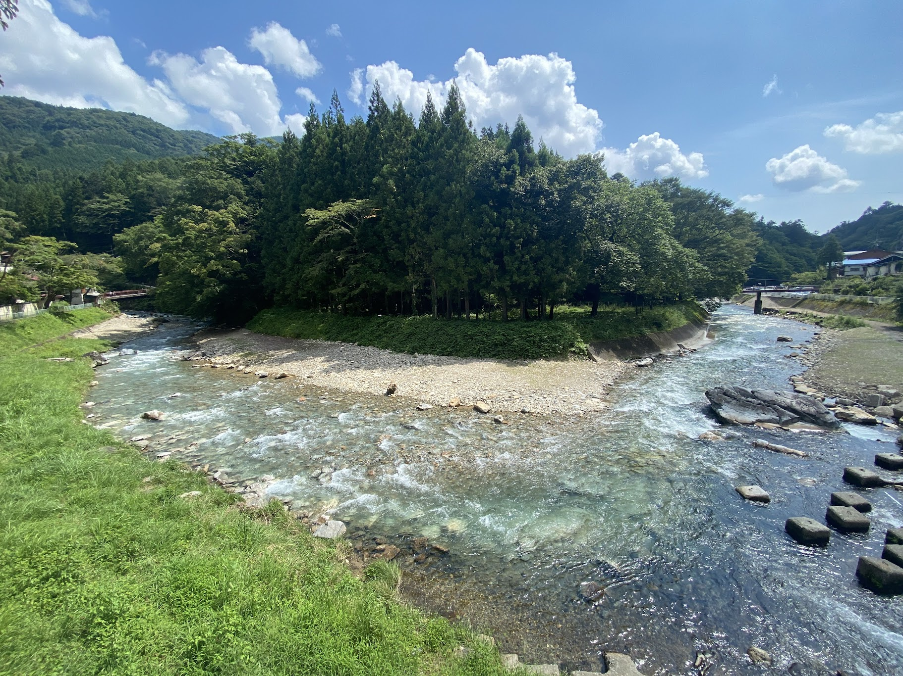
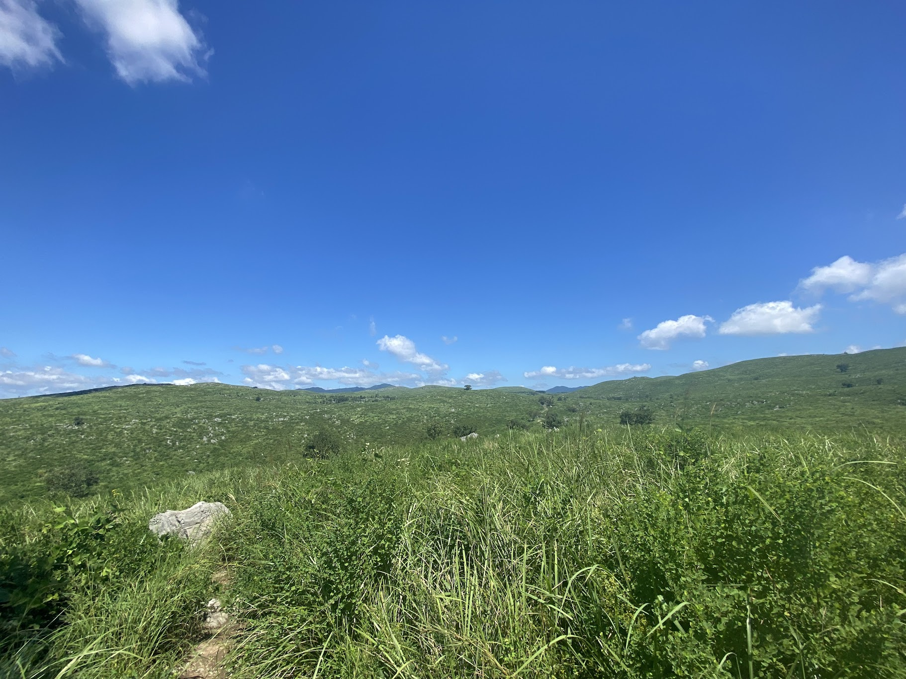
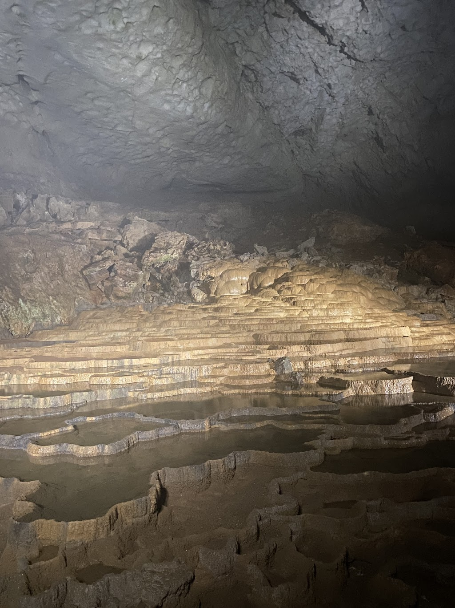
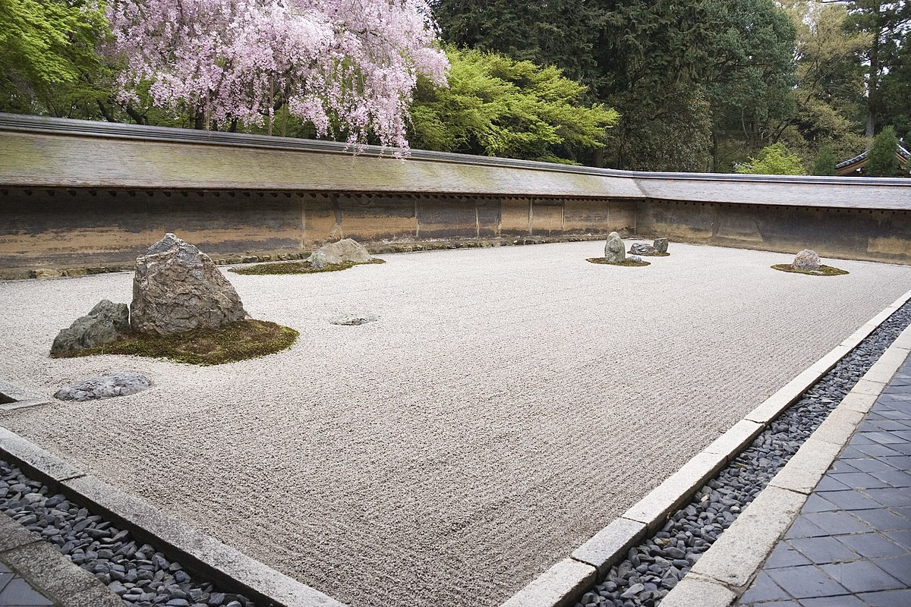

- Shima Onsen Hot Spring - Gunma
- This place is famous for the beautiful Japanese-style hotel named Sekizenkan that looks like the bathhouse in the movie: Spirited Away
- The bath in this hotel was made about 100 years ago and it was luxurious and Western-style at the time, which is now a rare cultural property
- The river running along the hot spring street is very clear and there are some public hot springs beside the river
- The river makes it feel cooler than the actual temperature
Sekizenkan Hotel
River Next to the Hot Springs
Data of Hot Springs in Japan

- Akiyoshidai Plateau/ Akiyoshido Cave - Yamaguchi
- Akiyoshidai Plateau has the highest concentration of karst formations in Japan
- The plateau was a coral reef under the ocean an estimated 300 million years ago and the area was pushed up onto land over a long period of time
- Akiyoshido Cave is the nation's largest and longest limestone cave right under the Akiyoshidai
- Rainwater that falls on the Akiyoshidai Plateau flows into the cracks and gaps and erodes the rocky land, forming impressive limestone and stalactite hollow formations
Akiyoshidai Plateau
Akiyoshido Cave

- TeamLab - Tokyo
- TeamLab is an immersive digital art museum
- There are two main museums named TeamLab Borderless and TeamLab Planets in different parts of Tokyo but their artworks are spread around the world
- There are various sections that effectively use the lights, spaces, water, and projection mapping, and one section is filled with water and you can walk through the water with barefoot
TeamLab Borderless
TeamLab Planets
To learn more, go to the TeamLab Website
- Ryoanji Temple - Kyoto
- Ryoanji Temple was built in 1450 and designated as a World Cultural Heritage site
- This temple is famous for the Japanese dry garden called Karesansui which creates a miniature stylized landscape such as mountains and river through carefully composed arrangements of rocks, moss, pruned trees and bushes, and gravel or sand representing ripples in water without water
- This garden uses perspective by gradually changing the height of the walls around the garden to make depth
- There are 15 rocks in the garden but one stone is always hidden from view no matter where you look from
Karesansui (Japanese Dry Garden)
